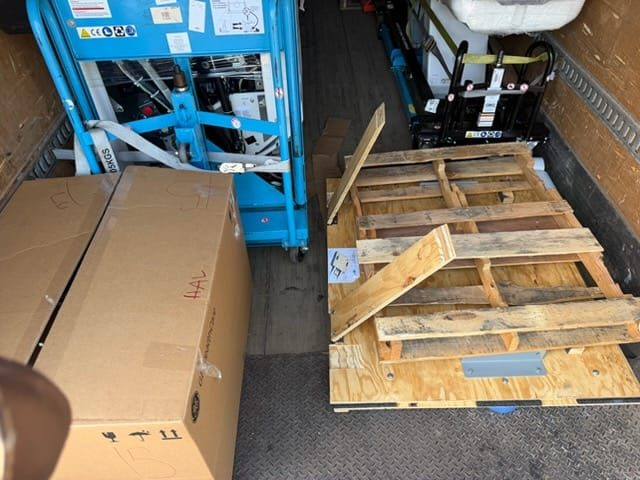

Federal rules require flatbed tie-downs with a combined working load limit (WLL) of at least half the cargo weight, plus a minimum number by length and weight, plus blocking so the load can't shift. Straps handle lighter and crated freight; chains and binders handle heavy iron. Edge protection, correct WLL, and re-checks are the difference between secured and a shoulder.
Straps get the credit, but securement is a system: block the load so it can't move, then tie it down to a number. Get the working-load-limit math wrong and it doesn't matter how many straps you throw over it. Here's how flatbed securement actually works.
Blocking comes before tie-downs
The first job is to stop movement in every direction — hardwood dunnage, chocks, cleats, and cradles that fill the gaps so the load can't slide, roll, or tip. Tie-downs hold the load against that blocking; on their own they don't stop a heavy load from walking. Full detail in our blocking, bracing and dunnage guide.

The half-the-weight rule (WLL)
Federal cargo-securement rules run on working load limit — the rated capacity of each strap, chain, binder, and anchor point. The core requirement: the combined WLL of all the tie-downs has to be at least half the weight of the cargo (the aggregate rule). On top of that there's a minimum number of tie-downs based on the length and weight of the article. Both have to be satisfied — enough capacity and enough tie-downs. The WLL of an assembly is set by its weakest part, so an under-rated binder or a worn strap drags the whole number down.
Straps vs. chains
- Straps (webbing) and edge protectors — crated equipment, coils, lumber, and lighter or finish-sensitive freight. Fast to work, easy on surfaces with corner protection.
- Chains and binders — heavy machinery, steel, and anything that has to be pinned hard to the deck. Grade-70 transport chain is the standard for heavy iron.
Tie to the load's engineered lash points or its skid — never over a control panel, a machined surface, or thin sheet metal — and put edge protection anywhere webbing or chain crosses a sharp corner, which is where straps cut and fail.
Re-check on the road
A load that's tight at the dock loosens as it runs — chains stretch, straps settle, blocking beds in. Rules require an inspection and re-tension within the first 50 miles and at every stop. It's the same standard we hold on every machinery haul and heavy haul move.
Bottom line
- Block and brace first; tie-downs hold the load against the blocking.
- Combined tie-down WLL must be at least half the cargo weight, plus the minimum count.
- Straps for lighter/crated freight; chains and binders for heavy iron.
- Tie to rated points, protect every edge, and re-check within 50 miles.
Want your load secured like it matters? Tell us what you're shipping and our crews build the securement around it.